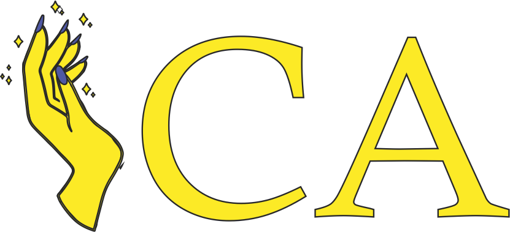

<nav class="navbar navbar-expand-lg navbar-light bg-light">
    
    <button class="navbar-toggler" type="button" data-toggle="collapse" data-target="#navbarSupportedContent" aria-controls="navbarSupportedContent" aria-expanded="false" aria-label="Toggle navigation">
      <span class="navbar-toggler-icon"></span>
    </button>
  
    <div class="collapse navbar-collapse" id="navbarSupportedContent">
      <ul class="navbar-nav mr-auto">
        <!-- <li class="nav-item">
          <a class="nav-link disabled" href="#" tabindex="-1" aria-disabled="true">Disabled</a>
        </li> -->
      </ul>
      <div class="d-flex align-items-center">
          
          <a class="mr-3">Iniciar sesión</a>
          <fa-icon [icon]="faQuestionCircle" size="2x"></fa-icon>
      </div>
    </div>
</nav>